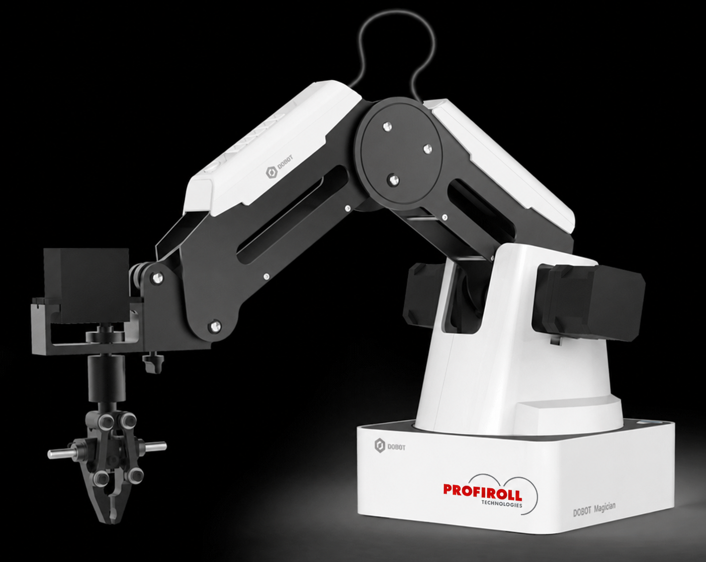
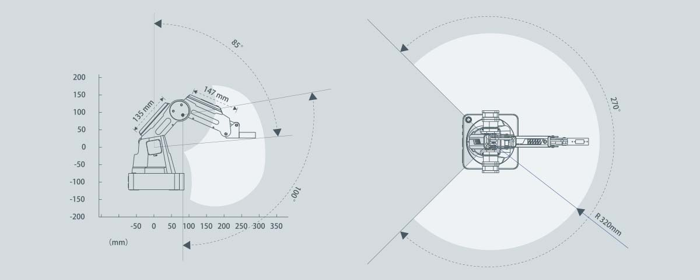
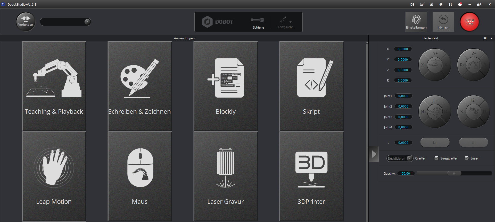

Start
Der Dobot Magician ist ein 4-Achsen-Roboter. Laut der ursprünglichen Seite wurde er von Profiroll Technologies aus Bad Düben im September 2018 für die Arbeit mit den Young Engineers zur Verfügung gestellt.

Arbeitsbereich
Der Arbeitsbereich des Dobot Magician wird durch die mechanischen Grenzen des Roboterarms bestimmt. Die Abbildung zeigt die Reichweite aus Seitenansicht und Draufsicht. Für praktische Versuche ist diese Darstellung wichtig, damit Arbeitsflächen, Bauteile und Sicherheitsabstände sinnvoll geplant werden können.

DobotStudio
Auf der Startseite von DobotStudio sind die wichtigsten Funktionen schnell erreichbar. Für den Einstieg eignen sich besonders die Direktsteuerung, das visuelle Programmieren mit Blockly und Skript-Code mit Python.

Bedienung
Für den Unterricht oder eine AG bietet sich eine schrittweise Einführung an:
- Roboter und Arbeitsbereich kennenlernen.
- DobotStudio starten und Verbindung zum Roboter herstellen.
- Den Roboter zunächst per Direktsteuerung bewegen.
- Einfache Bewegungsabläufe mit Blockly erstellen.
- Später Bewegungen über Python-Skripte steuern.
Wichtig: Vor jedem praktischen Versuch sollte der Arbeitsbereich frei sein. Bewegungen des Roboterarms müssen langsam und kontrolliert getestet werden. 🦾
Links
- DOBOT Magician Anleitung
- Dobot Magician User Manual
- Youtube-Kanal Next Robotics:
- DOBOT Tutorials Center
Quelle der zusammengefassten Inhalte: https://mrge.de/lehrer/sigismund/Young-Engineers/roboter/dobot_magician.html